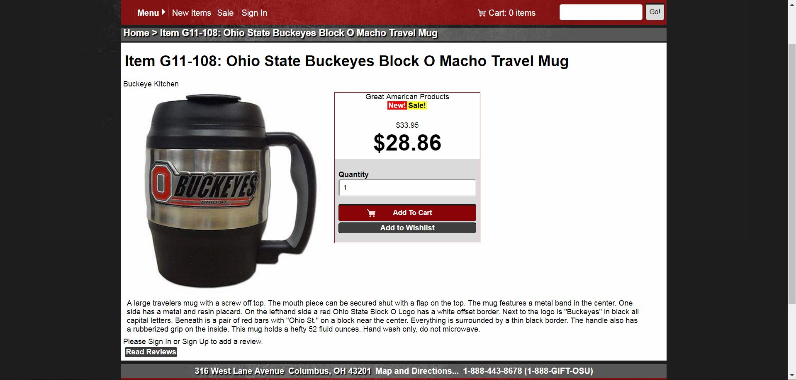

The New Foerster Portfolio
2014 - Present; HTML, CSS3, Visual Studio Code, GitHub, GitHub Desktop
This website is the result of around four years of platform exploration, growing skills, changing trends, and more. I started the website a few different times. Once on Adobe's defunct Muse program, another time hand coding, WordPress, and this iteration. Before I was going with the refined, if aged, navy and tan color scheme. However, I wanted to keep up with web trends and work with my latest CSS skills.
The Inspiration
I tend to take a lot of early evening strolls. One such evening I took a picture of the sunset. I thought I could get my site's color palette from this image. I crystallized the photo in Photoshop, and grabbed the ones with the best contrast.


1. The first image I used for colors. 2. The source picture for the color palette. 3. The image I used, crystallized with its swatches.
-

Ann-Marie Foerster Portfolio Site, Index - HTML and Responsive CSS in Visual Basic, June 2019 - Present -

Ann-Marie Foerster Portfolio Site, Image Expansion Example - HTML and Responsive CSS in Visual Basic, June 2019 - Present -

Ann-Marie Foerster Portfolio Site, 3D Physics Screenshot - HTML and Responsive CSS in Visual Basic, June 2019 - Present -

Ann-Marie Foerster Portfolio Site, Inserted Media in Video Page - HTML and Responsive CSS in Visual Basic, June 2019 - Present -

Ann-Marie Foerster Portfolio Site, Resume Page - HTML and Responsive CSS in Visual Basic, June 2019 - Present
a-ka-neArt.com
2012 - Present; HTML, CSS3, jQuery, HTML-Kit, WordPress (Present)
This is my longest living live website. I had it ready to go at the end of my web design class. We were required to buy hosting for the class, and I kept it since 2011.
This website has seen a considerable amount of evolution over its long life. The first two incarnations were full original HTML and CSS code. There was some use of jQuery light box tools. In 2015 I learned WordPress. This website has been running it since. I eventually turned it into a portfolio and e-commerce site with the use of Woocommerce. Setup was easy with my experience at Conrads College Gifts.
-

a-ka-neArt.com 2012, Snapshot - HTML and CSS, 2012 -

a-ka-neArt.com August 2013 Snapshot - HTML and CSS, 2013 -

a-ka-neArt.com Summer 2014 - HTML and CSS, 2012
-

a-ka-neArt.com on WordPress, April 2018 Snapshot - WordPress and CSS, 2015 - Present -

a-ka-neArt.com on WordPress, Menu Snapshot - WordPress and CSS, 2015 - Present -


a-ka-neArt.com on WordPress, April 2018 Snapshot - WordPress and CSS, 2015 - Present -

a-ka-neArt.com on WordPress, April 2018 Gallery - WordPress and CSS, 2015 - Present -

a-ka-neArt.com on WordPress, Woocommerce Page - WordPress and CSS, 2015 - Present -

a-ka-neArt Woocommerce Variable Product - WordPress and CSS, 2015 - Present
Conrads College Gifts
2015 - Present; HTML, CSS3, Drupal 7 Commerce, WAMP
The website to Conrads College Gifts was my first large scale website. The original site was using an outdated platform that was prone to errors. The webmaster decided on Drupal, working with Drupal 7 commerce.
I was able to install Drupal locally on my computer in order to work offline. My main duties were page and theme styling. The images and textures were carried over from a previous setup of the website. This website was my first experience with true responsive design.
-

Conrads College Gifts Header - HTML, CSS, and Drupal 7, 2015-2016 -

Conrads College Gifts Item Page - HTML, CSS, and Drupal 7, 2015-2016 -
Conrads College Gifts Mobile Page Hours - HTML, CSS, and Drupal 7, 2015-2016

Conrads College Gifts July 4th Hours Banner - Photoshop, July 2019
Greyroamer Photography
2012 - 2013; HTML, CSS3, JuiceboxBuilder, HTML-Kit
I made this for a friend of mine. He wanted a web presence off of Wix. The biggest challenge was finding a functioning light box that he wanted. I found a freemium tool called JuiceboxBuilder which we both agreed was the best app to use. I plan on making these pages again with new business plans.
-

Greyroamer Photography Portfolio, Home Page - HTML and CSS 2012 -

Greyroamer Photography Portfolio, Fashion Photography - HTML and CSS 2012 -

Greyroamer Photography Portfolio, About Page - HTML and CSS 2012
Filingo's Wine Jelly
2013 - 2015; HTML, CSS3, HTML-Kit
Filingo's Wine Jelly is a cottage industry business my mother was running. Creating some branding and this website was my first project out of college. My mother sat in on some of my coding sessions, and provided feedback on what she wanted on the project. The website was never used, but I kept the files for later use.
-

Filingo's Wine Jelly, Home Page - HTML and CSS, Fall 2014 -

Filingo's Wine Jelly, Products Page - HTML and CSS, Fall 2014 -

Filingo's Wine Jelly, Local Information Page - HTML and CSS, Fall 2014 -

Filingo's Wine Jelly, Contact Page - HTML and CSS, Fall 2014
My mother anticipates reviving the business soon. A new e-commerce capable website is in the works, and much of the branding is in progress.